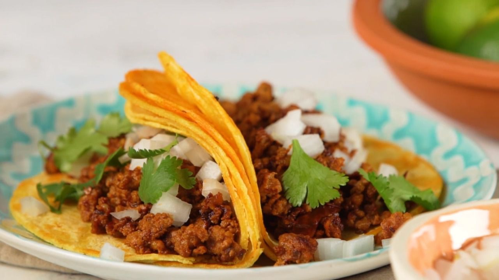

Easy Chorizo Street Tacos

Description:
These easy street tacos are simple to make and contain just 5 ingredients.
Ingredients:
- 1 chorizo sausage link, casing emoved and meat crumbled
- 2 tablespoons chipotle peppers in adobo sauce
- 4 corn tortillas
- 2 tablespoons chopped onion, or to taste
- 2 tablespoons chopped fresh cilantro, or to taste (optional)